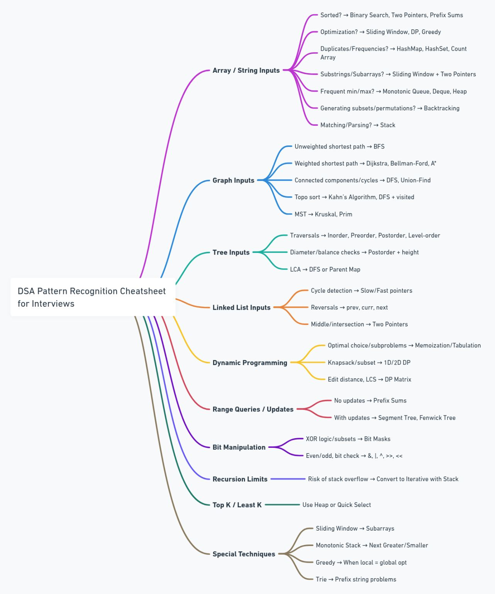

🔥 DSA Patterns for Interview Preparation

🧠 DSA Pattern Recognition Cheatsheet for Interviews
I invested 4+ hours to create this pattern recognition cheatsheet for DSA and coding interviews. This will help you solve 90% of all DSA problems in interviews (based on my mentoring experience over the last 8+ years)
❗ Most people struggle with DSA not because of weak logic, but due to the wrong approach.
✅ Think in patterns — it's the key to cracking unseen problems.
📌 Arrays / Strings
| # |
Problem Type |
Patterns to Use |
| 1️⃣ |
Sorted array? |
Binary Search, Two Pointers, Prefix Sums |
| 2️⃣ |
Optimization (Max/Min/Subarray)? |
Sliding Window, DP, Greedy |
| 3️⃣ |
Duplicates / Frequencies? |
HashMap, HashSet, Count Array |
| 4️⃣ |
Substrings / Subarrays? |
Sliding Window + Two Pointers |
| 5️⃣ |
Frequent min/max in window? |
Monotonic Queue, Deque, Heap |
| 6️⃣ |
Generate subsets/permutations? |
Backtracking |
| 7️⃣ |
Matching / Parsing? |
Stack (e.g., Balanced Parentheses) |
| # |
Problem Type |
Patterns to Use |
| 1️⃣ |
Detect cycles |
Slow/Fast Pointers (Floyd’s) |
| 2️⃣ |
Reverse list |
Pointers → prev, curr, next |
| 3️⃣ |
Find middle/intersection |
Two Pointers |
| # |
Problem Type |
Patterns to Use |
| 1️⃣ |
Traversals |
Inorder, Preorder, Postorder, Level-order |
| 2️⃣ |
Balance / Diameter |
Postorder + Height Calculation |
| 3️⃣ |
LCA (Lowest Common Ancestor) |
DFS or Parent Map + Ancestor Set |
| # |
Problem Type |
Patterns to Use |
| 1️⃣ |
Unweighted Shortest Path |
BFS |
| 2️⃣ |
Weighted Shortest Path |
Dijkstra, Bellman-Ford, A* |
| 3️⃣ |
Connected Components / Cycle Detection |
DFS, Union-Find |
| 4️⃣ |
Topological Sort |
Kahn’s Algo, DFS + visited |
| 5️⃣ |
Minimum Spanning Tree |
Kruskal, Prim |
🧮 Dynamic Programming
| # |
Problem Type |
Patterns to Use |
| 1️⃣ |
Optimal Choices / Subproblems |
Memoization, Tabulation |
| 2️⃣ |
Subset, Knapsack |
1D/2D DP |
| 3️⃣ |
String Match / Edit Distance |
DP Matrix (Edit Distance, LCS) |
📏 Range Queries / Updates
| # |
Problem Type |
Patterns to Use |
| 1️⃣ |
No updates, many queries |
Prefix Sums |
| 2️⃣ |
Many updates + queries |
Segment Tree, Fenwick Tree (BIT) |
🔢 Bit Manipulation
| # |
Problem Type |
Patterns to Use |
| 1️⃣ |
XOR, Subsets |
Bit Masks |
| 2️⃣ |
Even/Odd, Set/Unset Bits |
&, |
🔁 Recursion Limits
| Problem |
Pattern to Use |
| Stack overflow risk |
Convert to Iterative + Stack |
🔟 Top K / Least K Elements
| Problem |
Pattern to Use |
| Top/Least K Elements |
Heap |
| Exact K-th Element |
Quick Select |
🎯 Special Techniques
| Technique |
Use Case |
| Sliding Window |
Subarrays with fixed/dynamic size |
| Monotonic Stack |
Next Greater/Smaller Element |
| Greedy |
When local optimum = global optimum |
| Trie |
Prefix-based string search |
Let me know if you'd like practice questions, visuals or PDF export ✨
| 🏆 SL |
🚀 Priority |
📌 Topic |
📊 DSA Pattern |
💡 Importance |
🛠️ Techniques |
| 1️⃣ |
🔴 URGENT |
Binary Search Patterns |
🔍 Binary Search |
🟢 High |
➗ Divide search space to find the target element. |
| 2️⃣ |
🔴 URGENT |
Two Pointers Patterns |
👣 Two Pointers |
🟢 High |
🚶♂️ Traverse the array with two pointers to find pairs or subarrays. |
| 3️⃣ |
🔴 URGENT |
Sliding Window Patterns |
🪟 Sliding Window |
🟢 High |
🔄 Maintain a window to solve subarray problems. |
| 4️⃣ |
🔴 URGENT |
Depth-First Search (DFS) |
🌳 DFS |
🟢 High |
🌲 Explore all nodes of a graph/tree, backtrack when necessary. |
| 5️⃣ |
🔴 URGENT |
Breadth-First Search (BFS) |
🌊 BFS |
🟢 High |
📶 Level-order traversal of graph/tree. |
| 6️⃣ |
🔴 URGENT |
Dynamic Programming Patterns |
📦 Top-Down DP, Memoization |
🟢 High |
🔄 Break problems into overlapping subproblems. |
| 7️⃣ |
🔴 URGENT |
Graph Patterns |
🔗 BFS, Dijkstra, DFS |
🟢 High |
📍 Solve graph traversal and shortest path problems. |
| 8️⃣ |
🔴 URGENT |
Top ‘K’ Elements |
📊 Heaps, Quickselect |
🟢 High |
🏆 Use heaps or partitioning to find the k largest/smallest. |
| 9️⃣ |
🔴 URGENT |
Segment Tree Patterns |
🌲 Segment Tree |
🟢 High |
📏 Efficiently solve range queries and updates. |
| 🔟 |
🔴 URGENT |
Union-Find (Disjoint Set Union) |
🔗 Disjoint Set Union |
🟢 High |
🔗 Find and union disjoint sets efficiently. |
| 1️⃣1️⃣ |
🔴 URGENT |
Tree Patterns |
🌳 DFS, BFS |
🟢 High |
🌱 Solve tree traversal and manipulation problems. |
| 1️⃣2️⃣ |
🟡 PICK LATER |
Monotonic Stack Patterns |
📚 Stack |
🟡 Medium |
📈 Use stack for tracking increasing or decreasing order. |
| 1️⃣3️⃣ |
🟠 IMPORTANT |
Bit Manipulation Patterns |
🔢 Bitwise Operations |
🟡 Medium |
💡 Solve problems using bitwise AND, OR, XOR, shifts. |
| 1️⃣4️⃣ |
🟡 PICK LATER |
Modified Binary Search |
🔍 Binary Search |
🟡 Medium |
🛠️ Apply binary search with custom conditions. |
| 1️⃣5️⃣ |
🟡 PICK LATER |
Overlapping Intervals |
⏳ Greedy |
🟡 Medium |
📆 Solve problems by processing intervals optimally. |
| 1️⃣6️⃣ |
🟠 IMPORTANT |
Backtracking |
🔄 Backtracking |
🟡 Medium |
🔄 Explore all possible solutions and backtrack when invalid. |
| 1️⃣7️⃣ |
🔴 URGENT |
Substring Patterns |
🪟 Sliding Window, Two Pointers |
🟢 High |
🔤 Solve substring problems by adjusting window size. |
| 1️⃣8️⃣ |
🔴 URGENT |
Trie Patterns |
🌲 Trie |
🟡 Medium |
🔡 Efficiently store and search for strings with common prefixes. |
| 1️⃣9️⃣ |
🟡 PICK LATER |
Heap Patterns |
📊 Heap |
🟡 Medium |
🔺 Use heap operations to manage priority-based tasks. |
| 2️⃣0️⃣ |
🟡 PICK LATER |
Matrix Traversal |
🔄 Various Traversal Techniques |
🟡 Medium |
📋 Solve problems using matrix traversal techniques. |
🔹 Legend:
- 🔴 Urgent – High priority topics for interviews.
- 🟠 Important – Medium priority but useful for FAANG.
- 🟡 Pick Later – Lower priority but still valuable for problem-solving.
Resources:
- Comprehensive Data Structure and Algorithm Study Guide
- Backtracking solution for 10 popular problems: Permutations
- Dynamic Programming patterns for beginners: DP for Beginners
- All Graph algorithms in one place: Graph Algorithms One Place | Dijkstra | Bellman Ford | Floyd Warshall | Prims | Kruskals | DSU - LeetCode Discuss
- Sliding Window algorithm made easy: Find All Anagrams in a String - LeetCode
- Ultimate Binary Search guide: [Python] Powerful Ultimate Binary Search Template. Solved many problems - LeetCode Discuss
- How to solve Linked List problems?
- LeetCode was HARD until I Learned these 15 Patterns
- 20 Patterns to Master Dynamic Programming